Version 2.5.5 · Guided workflow, detailed component calculations, rendered equations, explanatory graphs and worked examples. This guide describes the implemented loss model and its limits; it does not establish hardware accuracy.
Complete a first study and understand what each stage requires.
Screen guide: Start a study and check its readiness
Actual screenshot of Converter Loss Lab 2.5.5 using its built-in synthetic demonstration study. The guidance below describes associated controls; some controls may be further down the page. Example results are not laboratory measurements.
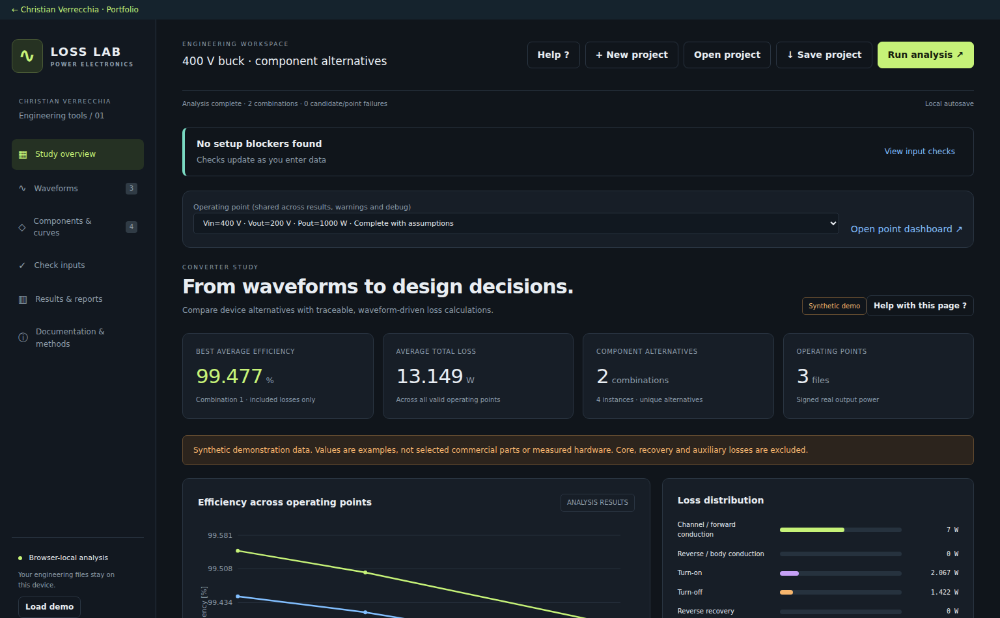
Set the window and calculation policies before running.
Open input checks to review required fields and reference notes.
Run analysis opens the project summary and characteristic-query screening.
First analysis
Use Load demo to open the synthetic buck study. This replaces the current study only after confirmation; download your project first if you need a copy. The demo has known illustrative curves, waveforms and alternatives.
Open Results after the run. Start with whole-range comparisons, then choose an operating point. Select a component label or coloured contribution to inspect its losses. Open Debug & interpolation for the actual characteristic query and waveform values.
Your own study
Import steady-state waveform files, one file per operating point. Set time units before calculation.
Map input/output power pairs and each component bank’s current, voltage and, for MOSFETs, gate.
Add alternatives, physical device counts, enabled losses and the characteristics needed by each model.
Use Check inputs and Open & fix. Review reference coverage and the project summary.
Run analysis; review negative projections before explicitly accepting any zero floor.
Compare complete results, examine assumptions and save the project and report.
What is being calculated
The tool post-processes imported circuit waveforms using device characteristics. It estimates enabled component losses and steady-state temperatures. It does not solve or re-simulate the switching circuit. Changes to inputs invalidate the previous analysis. Display filters and Help do not.
Prepare and import waveform files
Import finite, time-ordered signals with explicit units and a useful steady-state window.
Screen guide: Import waveforms and verify units
Actual screenshot of Converter Loss Lab 2.5.5 using its built-in synthetic demonstration study. The guidance below describes associated controls; some controls may be further down the page. Example results are not laboratory measurements.
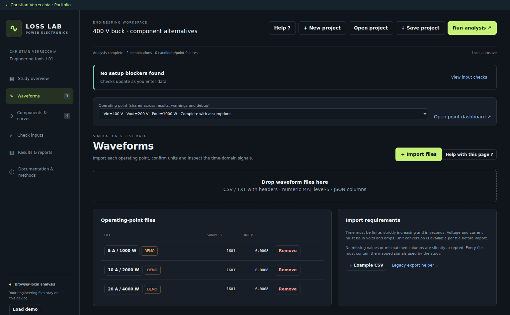
Select the correct time column and inspect the waveform shape.
Each imported file represents an operating point; batch signal names must match.
Confirm units explicitly—microseconds and seconds are not interchangeable.
File preparation
CSV/TXT needs named columns and consistent row widths. Numeric arrays can also be imported from supported JSON and level-5 MAT files. Table/object data and HDF5 v7.3 files need conversion with the supplied export helper. Batch files should contain the same signal names.
Time must have at least two samples, be finite and strictly increasing. All signal columns must have matching lengths and finite numeric values. An invalid unused column can still fail validation.
Units and window
Set time and signal units deliberately: seconds, amperes and volts are the internal calculation units. A microsecond trace interpreted as seconds changes event rates and losses dramatically.
The last selected duration of each file is used. Boundary samples are interpolated. Choose settled, representative data and preferably an integer number of relevant cycles. Very short windows, startup transients or inadequate switching-edge sampling can give misleading event counts or spectra.
Current limits
At most 1,000,000 samples per waveform, 2,000 alternative combinations and 20,000 combination–point rows. Split larger studies.
Display traces are sampled for responsiveness; the numerical calculation uses the selected waveform window.
Map component signals and converter power
Choose the signals each model uses and preserve the intended power-flow direction.
Screen guide: Map bank signals and delivered power
Actual screenshot of Converter Loss Lab 2.5.5 using its built-in synthetic demonstration study. The guidance below describes associated controls; some controls may be further down the page. Example results are not laboratory measurements.
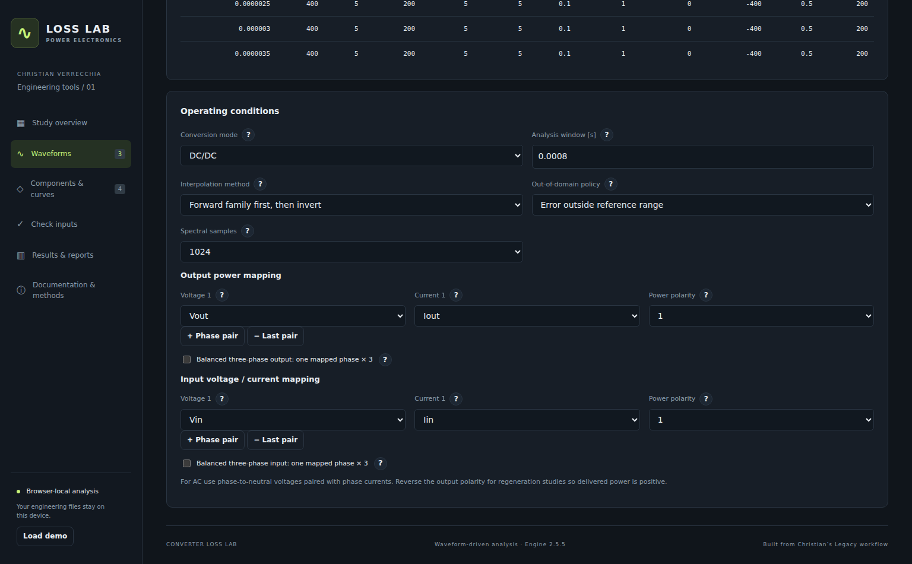
Map signals for this bank, not another switch in the same leg.
Output voltage and current are paired for signed real-power integration.
Choose either one balanced phase times three, or explicit phase pairs.
Component mapping
Map current and voltage for every component bank. MOSFETs also need a gate signal. The mapped current represents the whole bank; series/parallel settings determine per-device conditions. Check that these variables exist in every imported file.
Waveform signs are retained in the debugger. Some characteristic queries intentionally use current or voltage magnitudes. Reverse gate-on MOSFET current uses the symmetric channel model; gate-off reverse current uses the body path when enabled.
Power mapping
Delivered output power is the time average of signed voltage × current, summed across mapped pairs. Efficiency is Pout / (Pout + included losses). Output power must be positive for a valid efficiency result; check pair polarity for the intended direction of energy flow.
For AC, pair phase-to-neutral voltage with that phase current. Balanced ×3 uses exactly one phase pair; do not map three phases and also multiply by three. Input waveform power is a separate balance check; discrepancies are not allocated to invented loss categories.
Components alternatives and enabled losses
Configure each physical component bank separately and enable only the contributions you model.
Screen guide: Choose a component alternative and included losses
Actual screenshot of Converter Loss Lab 2.5.5 using its built-in synthetic demonstration study. The guidance below describes associated controls; some controls may be further down the page. Example results are not laboratory measurements.
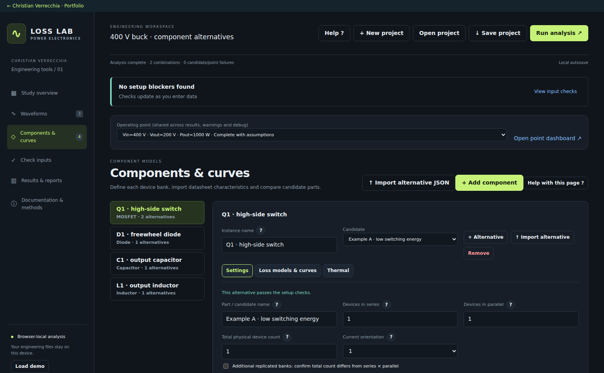
Enable only the loss contributions you intend to include.
Separate physical banks remain separate even when they use the same component type.
Select one compatible active characteristic for each enabled loss.
Instances and alternatives
An instance is a named bank such as Q1, Q2, C1 or L1. Alternatives are candidate parts for that instance. A combination selects one alternative from every instance. All alternatives share the imported waveforms.
Alternatives of one instance must use the same enabled loss categories for a consistent comparison.
Applicable contributions
MOSFET: channel conduction, body diode conduction, turn-on, turn-off and reverse recovery.
Diode: forward conduction and reverse recovery.
Capacitor: ESR loss.
Inductor: winding/copper and core loss.
Excluded versus zero
Excluded means you deliberately disabled a contribution. An enabled contribution returning 0 W is a calculated result. Missing required characteristics cause an incomplete result; they are never silently treated as zero.
Series parallel and total device counts
Counts scale per-device electrical conditions and total bank loss.
Screen guide: Enter series parallel and physical device counts
Actual screenshot of Converter Loss Lab 2.5.5 using its built-in synthetic demonstration study. The guidance below describes associated controls; some controls may be further down the page. Example results are not laboratory measurements.
The example has four devices arranged as two series by two parallel.
Per-device current and voltage follow the ideal sharing model.
Do not change total count independently unless it represents additional replicated banks.
Series and parallel
With ideal sharing, parallel devices each carry the mapped bank current divided by the parallel count; series devices each block the mapped voltage divided by the series count. Total bank loss sums the physical device losses.
Example: 20 A through two parallel devices gives 10 A per device. A constant 20 mΩ resistance gives 2 W per device and 4 W for that parallel bank. Two devices in series across 800 V each see 400 V in this model.
Total count and limitations
Use positive integers. Normally total physical count equals series × parallel. A different total requires confirmation for additional replicated banks. Do not increase total count simply to fix an input warning.
Ideal sharing does not account for layout, tolerance, temperature imbalance or dynamic voltage/current sharing. Validate these separately.
Import digitise and select characteristics
A valid curve needs the correct quantities, units and reference conditions.
Screen guide: Review reference curves and the selected engine query
Actual screenshot of Converter Loss Lab 2.5.5 using its built-in synthetic demonstration study. The guidance below describes associated controls; some controls may be further down the page. Example results are not laboratory measurements.
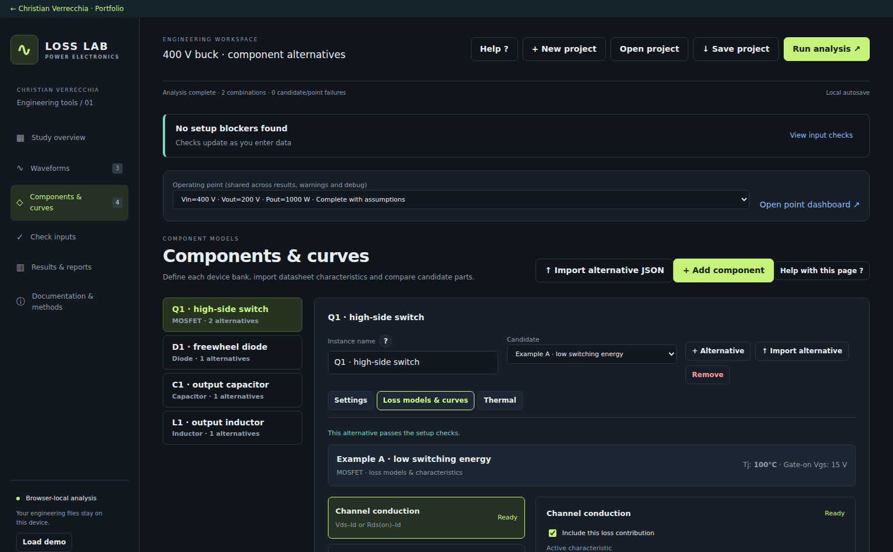
Check the axis quantities and reference family before using a curve.
Each iteration has its own reference conditions and SI-normalised sample arrays.
Flat forward outputs and conflicting inverse inputs require different treatment.
Adding data
Import characteristic data or calibrate a datasheet image with axis limits, linear/log scales and units before sampling. Each iteration represents one reference condition such as temperature, gate voltage or gate resistance.
Select the active characteristic explicitly when several curves support the same enabled loss. Switching energies must use energy units; charge-based recovery is a different approximation. Normalised resistance requires its base value and must not be scaled twice.
Repeated values and inverse lookup
Repeated outputs can be physically valid in a forward curve. If the engine queries that output as its input, a flat segment may give several possible answers and make inversion ambiguous. The editor identifies the queried quantity, iteration and affected rows.
Identical duplicate pairs are redundant. Conflicting duplicates require a single-valued branch or an applicable explicit zero-current rule. Do not delete a physical branch without checking what the query needs.
Reference conditions
Missing dependencies or inconsistent iteration metadata prevent a reliable family interpolation. Single-reference dependencies are treated as fixed reference assumptions, not as a fitted temperature or gate-voltage model.
Interpolation and out-of-domain policies
Choose the order of curve/dependency interpolation and how queries outside coverage are handled.
Screen guide: Choose interpolation order and domain behaviour
Actual screenshot of Converter Loss Lab 2.5.5 using its built-in synthetic demonstration study. The guidance below describes associated controls; some controls may be further down the page. Example results are not laboratory measurements.
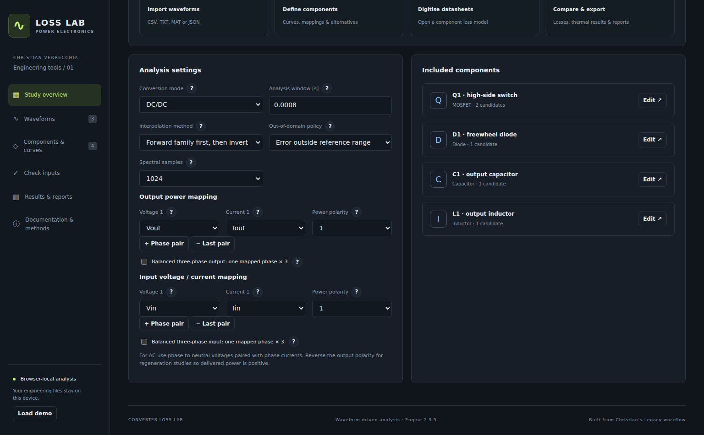
Select the mathematical order deliberately; inverse queries can differ.
Forward-first combines the reference family before any required inversion.
Domain policy controls queries outside coverage; it does not validate the physical model.
Interpolation methods
Forward family first, then invert is the default for new studies: form the forward characteristic at requested dependencies, then invert it if the query direction requires this. Nonmonotonic or flat combined inverse branches are rejected.
Reference-curve interpolation queries each reference curve first, then interpolates the results across dependencies. Previously saved studies retain their method; pre-method projects retain reference-first behaviour. Weighted inverse-distance averaging is a separate heuristic, not rectangular linear interpolation.
Domain policies
Error rejects queries outside supported reference ranges. Clamp uses boundary conditions. Linear extrapolation extends the boundary segment or supported dependency model. Legacy compatibility retains older duplicate and inverse-axis rules; it is not a physical validation guarantee.
Example: extending points (10 A, 0.2 V) and (20 A, 0.5 V) gives −0.07 V at 1 A. The algebra is linear, but the negative drop magnitude is invalid for this loss model. Edit the data or review an explicit zero floor.
Sparse data
Complete reference grids use rectangular interpolation. Sparse families can use a simplex between reference conditions; unsupported coverage may fail. Extrapolation adds model uncertainty even when the chosen policy allows it.
Origin rules and negative projection review
A zero-current origin and replacing negative outputs are independent choices.
Screen guide: Keep the zero-origin rule separate from a zero floor
Actual screenshot of Converter Loss Lab 2.5.5 using its built-in synthetic demonstration study. The guidance below describes associated controls; some controls may be further down the page. Example results are not laboratory measurements.
The origin rule changes the low-current interpolation segment for compatible characteristics.
The review preserves the raw projection and the actual query conditions.
A zero floor is a separate explicit model choice, not an automatic repair of the data.
Origin versus floor
The explicit origin rule defines zero-current voltage or energy as zero for compatible characteristics without rewriting stored samples. Resistance, ESR and normalised temperature correction should not generally pass through (0,0).
Zero flooring replaces a negative physical magnitude with zero only after explicit per-characteristic acceptance. This may underestimate loss. It does not change signed waveforms or temperatures.
Before and during analysis
The tool screens actual characteristic queries before the full run and offers editing or zero-floor acceptance. Inspect the raw projection, dependencies and reference family in Debug.
Thermal iteration can reach conditions not known in advance. Runtime checks remain necessary. Failed runs retain available queries, waveforms and thermal history. Eon/Eoff are zero at zero current in the selected switching model; separate no-load output-capacitance energy is not added.
Logic and analog gate signals
Gate type determines state detection and the voltage used for characteristic queries.
Screen guide: Use the gate fields appropriate to the signal type
Actual screenshot of Converter Loss Lab 2.5.5 using its built-in synthetic demonstration study. The guidance below describes associated controls; some controls may be further down the page. Example results are not laboratory measurements.
Analog mode shows hysteresis thresholds; logic mode shows the drive-voltage settings instead.
Between the analog thresholds, the previous gate state is retained.
Thresholds classify the waveform and are not a fitted transistor threshold-voltage model.
Logic signals
Logic mode treats gate >0.5 as ON and gate ≤0.5 as OFF. Enter the actual gate-drive ON and OFF voltages separately; these supply Vgs reference conditions. Analog threshold fields are hidden because they are not used in this mode.
Analog signals
Analog mode uses the mapped gate voltage directly. State turns ON at or above the ON threshold and OFF at or below the OFF threshold. Between them the previous state is retained.
For thresholds 2 V / 0 V, a sequence 0, 1, 2, 1, 0 V gives OFF, OFF, ON, ON, OFF. These are waveform-classification thresholds, not a fitted transistor threshold-voltage model. Review the event trace to check the selected values.
Gate resistance
Rg turn-on and Rg turn-off are the conditions used to query the corresponding energy curves. Use finite, nonnegative values and consistent datasheet definitions. A logic waveform can support Vgs sensitivity; an analog waveform is not rescaled by that control.
Conduction switching and recovery models
Understand which losses come from time integration and which come from event energy.
Screen guide: Use the gate fields appropriate to the signal type
Actual screenshot of Converter Loss Lab 2.5.5 using its built-in synthetic demonstration study. The guidance below describes associated controls; some controls may be further down the page. Example results are not laboratory measurements.
Analog mode shows hysteresis thresholds; logic mode shows the drive-voltage settings instead.
Between the analog thresholds, the previous gate state is retained.
Thresholds classify the waveform and are not a fitted transistor threshold-voltage model.
Conduction
Channel or forward voltage is queried from a compatible current-driven curve, or resistance gives I²R. The engine integrates instantaneous conduction power over the applicable gate states. Device currents and total counts follow the bank settings.
Gate-on reverse MOSFET current uses a symmetric channel magnitude approximation. Gate-off reverse conduction needs its separate characteristic and enabled category.
Switching and recovery
Turn-on/off energies are queried at detected gate events, summed and divided by the window duration. When selected, linear blocking-voltage scaling uses a positive reference voltage. Event energies do not define switching-pulse shape or duration.
Recovery is inferred from forward current ending with blocking voltage. Err is an energy characteristic; Qrr × voltage is a charge-based approximation. Confirm the definition to avoid double counting recovery already included in Eon. Inspect event source current/voltage samples, which may occur at different times.
Capacitor ESR inductor winding and core loss
Use the appropriate resistive and magnetic model for the waveform and data.
Screen guide: Select constant or frequency-dependent resistance
Actual screenshot of Converter Loss Lab 2.5.5 using its built-in synthetic demonstration study. The guidance below describes associated controls; some controls may be further down the page. Example results are not laboratory measurements.
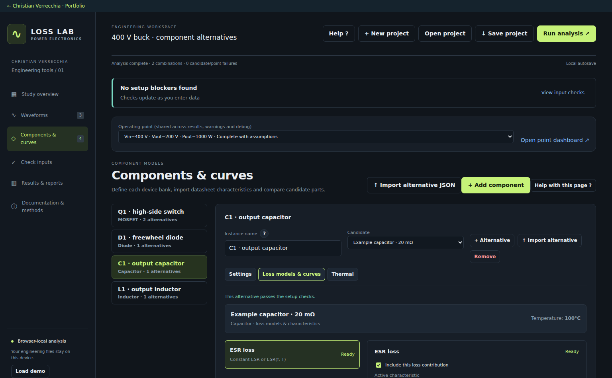
The active model determines whether current is integrated with constant R or split spectrally.
Constant resistance already includes the DC term through total RMS current.
The spectral DC resistance is not capacitor insulation resistance; verify any capacitor mean current.
Resistance models
Constant resistance uses total time-weighted RMS current: P = Irms²R. This includes any mean-current term. Frequency-dependent resistance uses harmonic RMS currents and the resistance at each frequency.
The spectral form is P = Idc²Rdc + sum(In,rms² × R(fn,T)). An inductor requires DC winding resistance when mean current is present. A capacitor’s frequency model supports an explicit DC series resistance for a real mean-current contribution; this is not insulation/leakage resistance. DC voltage alone does not imply DC capacitor current.
Spectral quality
The selected time window is uniformly resampled for the supported power-of-two FFT size. Use settled integer-cycle waveforms and enough source samples. The FFT cannot reconstruct harmonics absent from the source data.
Core model
Core loss uses winding voltage integration to estimate flux swing; turns, effective core area and volume must be positive. Volt-second balance and a usable excitation frequency are required.
The supported core curve approach is a sinusoidal-equivalent approximation. PWM excitation, DC bias, minor loops and dedicated transformer effects require separate validation.
Fixed temperature and iterative thermal models
Temperature dependence can be fixed or solved with a scalar steady-state model.
Screen guide: Set thermal scope and inspect convergence
Actual screenshot of Converter Loss Lab 2.5.5 using its built-in synthetic demonstration study. The guidance below describes associated controls; some controls may be further down the page. Example results are not laboratory measurements.
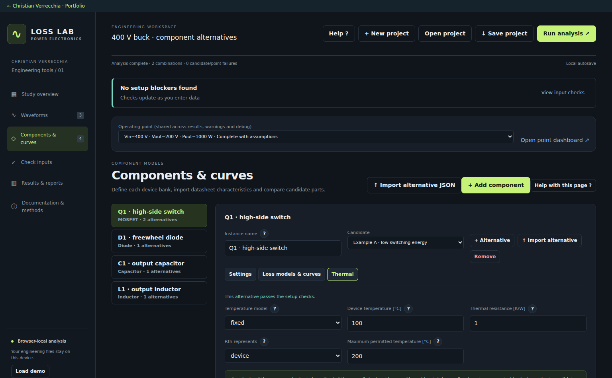
The thermal reference and Rth form the model’s steady-state temperature target.
Declare whether Rth represents one device or the entire bank; the loss multiplier changes.
Use the convergence plot to explain a limit breach or failure instead of treating failure as zero loss.
Model setup
Fixed mode evaluates losses at the entered temperature. Iterative mode uses the entered reference temperature and thermal resistance to seek a steady-state device temperature. Declare whether Rth applies per device or to the entire bank.
Do not apply both absolute temperature-dependent resistance and a separate normalised temperature multiplier to the same loss.
Convergence and limits
The solver uses damping and checks finite values, its configured temperature limit, a maximum of 80 iterations and a 0.05 °C residual criterion. Failure does not make a physically valid zero-loss result.
Use Model details → Thermal convergence to inspect trial temperatures, equilibrium targets, residuals and limits, including failed runs. Shared heatsink coupling and transient thermal impedance are not represented.
Results component filters and alternative comparisons
Separate selected-component losses from whole-converter efficiency.
Screen guide: Compare filtered alternatives with the combined breakdown
Actual screenshot of Converter Loss Lab 2.5.5 using its built-in synthetic demonstration study. The guidance below describes associated controls; some controls may be further down the page. Example results are not laboratory measurements.
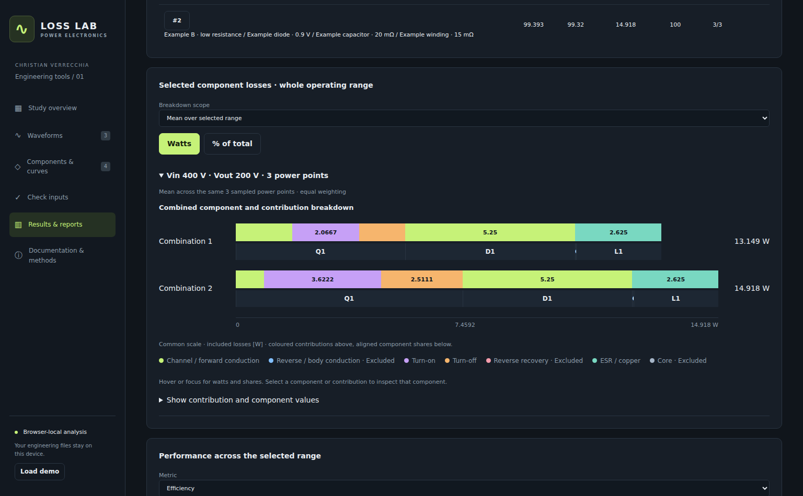
Each bar groups coloured contributions within the aligned component block underneath.
Selected component losses set the subtotal and percent denominator; converter efficiency stays whole-converter.
Use the same voltage and power scope when comparing alternatives.
Comparison scope
Use independent component and combination filters to show all banks, one bank such as Q1, or several such as Q1 + Q2. Loss subtotals and percentage shares use only selected banks. Converter efficiency continues to use all enabled component losses. Filters update existing results without rerunning.
Whole range has independent Vin, Vout and Pout filters. Fixed-voltage groups keep comparisons coherent. Equal-weight means are over the selected sampled operating points, not an energy-weighted drive cycle. Incomplete combinations are visible but cannot receive a best label.
Combined breakdown
Within each alternative’s bar, coloured contribution segments belong to the component block immediately below them. Hover or keyboard focus shows watts and share. Select either row to inspect that bank. Zero is a computed included contribution; Excluded is a disabled one.
The point explorer has separate Vin/Vout/Pout choices. Model details, warnings and debug follow the selected point and inspected alternative. Converter power flow is explicitly a whole-converter view even while component subtotals are filtered.
Maps and exports
Heatmaps group numerically equivalent coordinates. Continuous mode interpolates only supported regions and retains sample markers; unsupported gaps do not become data. CSV/JSON exports retain the complete result set; the report dialog has its own combination, point and section choices.
Debug characteristic queries and waveforms
Trace a result back to the values and characteristics used by the engine.
Screen guide: Trace the selected query back to curves and waveforms
Actual screenshot of Converter Loss Lab 2.5.5 using its built-in synthetic demonstration study. The guidance below describes associated controls; some controls may be further down the page. Example results are not laboratory measurements.
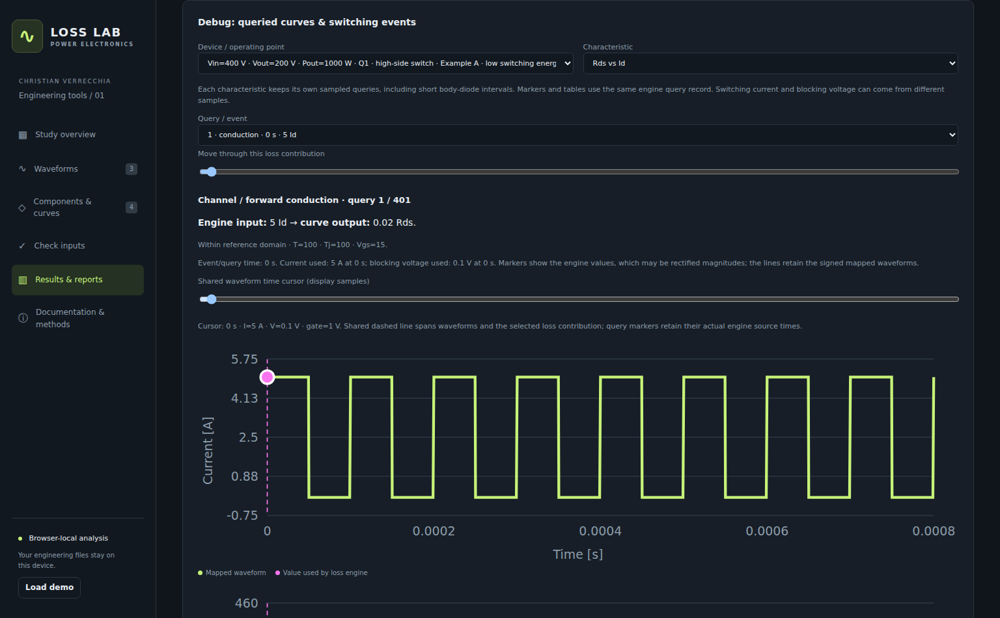
The shared cursor aligns the current, voltage, gate and selected loss view.
Switching energies are event quantities; source current and voltage samples may differ in time.
Check requested dependencies, raw output and reference coverage as well as the displayed value.
Inspect a query
Open Results → Explore an operating point → Debug & interpolation. Choose the bank, characteristic and query/event. Reference curves, the evaluated family and the selected query explain the interpolation.
Read the requested input, dependencies, returned value and raw projection. A zero-floor choice keeps both the negative raw value and the corrected value. An out-of-coverage marker deserves review even when extrapolation was allowed.
Linked traces
The shared cursor aligns current, voltage, gate and the selected loss contribution. Query markers use the actual engine source samples; switching current and blocking voltage may be taken from different samples.
Conduction/body graphs can show an integral and full-resolution average. Switching graphs show event energies; no arbitrary instantaneous switching-pulse power is invented. Display samples and query records may be thinned; they are not the full integration dataset.
When calculation fails
Available failed-device queries, waveforms and thermal history remain inspectable. A setup failure may occur before any query exists, and constant models may have no characteristic-query graph. Use Check inputs and the component setup for those cases.
Sensitivity parameters scope and zero response
Sensitivity recalculates losses for one parameter change at a time, using fixed circuit waveforms.
Screen guide: Choose sensitivity scope and independent parameter steps
Actual screenshot of Converter Loss Lab 2.5.5 using its built-in synthetic demonstration study. The guidance below describes associated controls; some controls may be further down the page. Example results are not laboratory measurements.
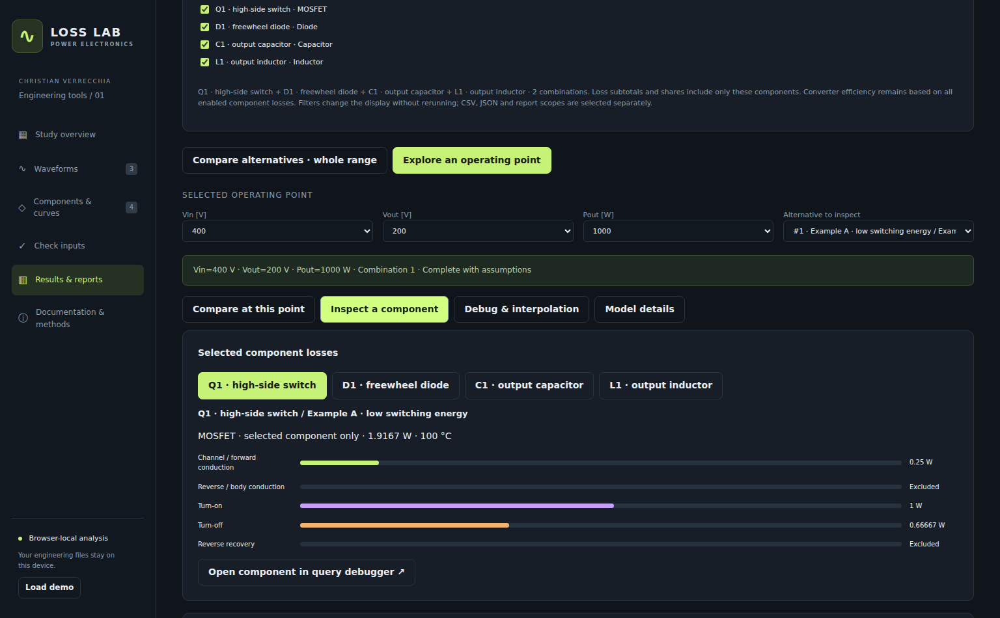
Check both the target component and operating-point scope before starting.
Each selected parameter has its own perturbation; integer-count rounding is reported.
A zero response can reflect a missing or fixed dependency rather than physical insensitivity.
What reruns
Select one combination and target component. All operating points recalculates the baseline and each −/+ scenario for every imported waveform in that scope. Choosing one point limits the study to that file. Other alternative combinations are not swept automatically.
Every selected parameter has its own perturbation. With N parameters, the study runs a baseline and up to 2N scenarios. Component losses and iterative thermal conditions are evaluated again, while imported waveforms and frequency remain fixed.
Units and interpretation
Temperature can use °C steps or percent of absolute Kelvin temperature. Series/parallel counts can use whole-device steps or percentages rounded to an integer change; requested and actual changes are shown. Series changes device voltage and total count; parallel changes device current and total count, under ideal sharing.
A zero response can mean weak model sensitivity, a fixed dependency or absent data. Check the stated coverage explanation. A tornado using chosen steps reflects those unequal steps; normalised percent response has different comparison semantics. These are local model estimates, not circuit redesign validation.
Troubleshooting and result completeness
Understand whether an issue blocks the study, one device or only efficiency.
Screen guide: Use the input check and its repair links
Actual screenshot of Converter Loss Lab 2.5.5 using its built-in synthetic demonstration study. The guidance below describes associated controls; some controls may be further down the page. Example results are not laboratory measurements.
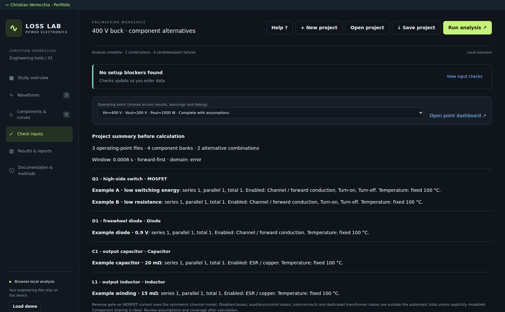
Read the component and category so you repair the intended bank and alternative.
Open & fix navigates to the relevant input; the adjacent help explains the reasoning.
Passing setup checks does not guarantee final query coverage or thermal convergence.
Find the right place to fix
Missing or inconsistent time/signal data: return to waveform import and units.
Unmapped bank signal: open the component mapping and check every file.
Missing characteristic or conflicting duplicate inputs: open the highlighted characteristic and its iteration/rows.
Out-of-coverage query: inspect reference data, dependencies and the selected domain policy.
Negative physical projection: edit the characteristic or explicitly review a zero floor; it may underestimate loss.
Thermal failure: inspect losses, temperature dependence, Rth scope, convergence and limits.
Result states
Complete results include all required enabled losses. Complete with assumptions requires review of accepted model/reference choices. Incomplete means at least part failed; Failed means no complete device result is available for that row.
One alternative can fail while others remain valid. To enter the overall ranking a combination needs valid results at every required point. Missing values are unavailable, not zero. Setup checks cannot predict every waveform query or final thermal condition.
Save projects reports and calculation records
Keep a portable project and choose export scopes deliberately.
Screen guide: Choose report scope and save a portable study
Actual screenshot of Converter Loss Lab 2.5.5 using its built-in synthetic demonstration study. The guidance below describes associated controls; some controls may be further down the page. Example results are not laboratory measurements.
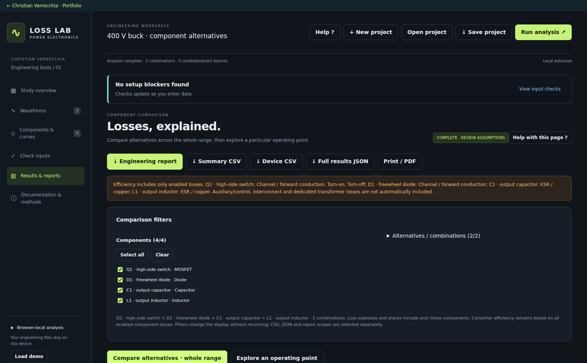
Report selections define their own scope; review them before exporting.
A downloaded project is the portable record; browser autosave is not a shared file.
Keep the full results JSON when you need diagnostic and query provenance.
Project and calculation records
Save project downloads JSON with configuration, characteristic data and imported waveforms. Browser autosave is local and may exceed storage limits for large projects; check the save indicator and keep a downloaded copy.
Opening a project replaces the current study only after a successful import. Calculated results must be rerun. Full results JSON keeps detailed numerical/diagnostic records; summary and device CSV provide tabular exports.
Reports and documentation
The engineering report dialog lets you choose combinations, operating points and sections. Display filters do not silently change these export choices. Review report scope before downloading HTML or printing to PDF.
The Help Centre and printable manual share one content source. Open Full manual and use the browser Print / Save as PDF action for an offline copy.
Calculation reference and model limits
The tool estimates enabled losses; a valid run is not proof of hardware suitability.
Screen guide: Open contextual documentation without leaving the study
Actual screenshot of Converter Loss Lab 2.5.5 using its built-in synthetic demonstration study. The guidance below describes associated controls; some controls may be further down the page. Example results are not laboratory measurements.
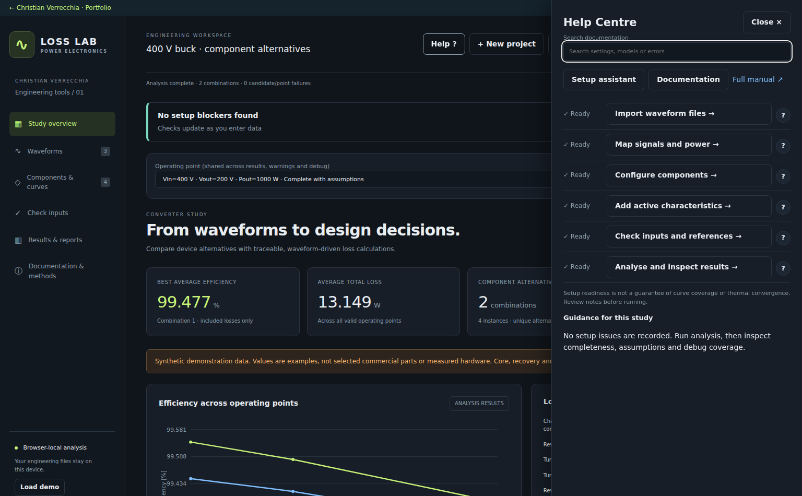
The Help button and question marks lead to the same documentation source.
Use the setup assistant for next steps, or search a setting/error directly.
The full manual includes equations, graphs and these screen illustrations.
Core relations
Delivered power: average of signed V(t) × I(t) over the selected window, summed across pairs.
Conduction: average of I(t) × Vdrop(t), or I(t)² × R(t), over the applicable states.
Switching/recovery: sum of selected event energies divided by window duration.
Resistive spectrum: mean-current term plus sum of harmonic Irms² × R(f,T).
Bank losses: per-device results scaled by the configured physical count and ideal sharing.
Estimated efficiency: Pout / (Pout + all enabled included losses).
Interpretation
Excluded losses, auxiliary/control power, interconnects and dedicated transformer losses are not automatically included. No measured accuracy, dynamic sharing, shared thermal coupling or physical component-rating validation is implied by a complete result.
Results depend on waveform quality, curve calibration, reference coverage, assumptions and model definitions. Validate representative cases independently before using the estimates to justify a hardware decision.
Conversion mode: what actually changes
Determine how the tool represents input and output voltage in results and efficiency maps.
The four modes
DC/DC: Vin is the time-average input voltage; Vout is the time-average output voltage.
AC/DC: Vin is RMS; Vout is the time average.
DC/AC: Vin is the time average; Vout is RMS.
AC/AC: both Vin and Vout are RMS.
Effect on results
The engine computes each mapped voltage over the selected analysis window. If several voltage pairs are mapped on one side, their representative voltages are averaged. These Vin/Vout values label operating points and feed voltage filters, curves and efficiency maps. Example: a zero-mean 230 Vrms sine wave is approximately 0 V in DC mode and 230 V in AC mode over full cycles.
Analysis window [s]
Select the final steady-state duration used for every operating-point file.
Which samples are used
Enter a positive duration in seconds. The tool takes the last requested duration ending at the final time sample. If the file is shorter, the available record is used. A start boundary between samples is linearly interpolated for every signal. Example: a file from 0 to 0.12 s with a 0.02 s window is analysed from 0.10 to 0.12 s.
Effect on calculations
This window sets average power, time-weighted RMS, conduction averages, switching/recovery events per second, spectra and core flux integration. Changing it can change all losses, efficiency, temperatures and reference-curve coverage. It is not a display-only zoom.
Choosing a duration
Use settled data and preferably whole cycles of the slowest relevant periodic behaviour. Make sure the final samples in each log and the full selected analysis window cover steady-state operation. Include enough switching cycles to represent event rates. A shorter window can miss events; a nonperiodic boundary produces spectral leakage. A longer window containing startup or drift changes the estimated operating point.
Interpolation method
Choose how sampled characteristics are evaluated between points and reference conditions.
Start with the sampled curve
A characteristic is a table of sampled points, such as current and on-state voltage. Between two samples, the tool uses a straight line: y = y1 + (x − x1) × (y2 − y1)/(x2 − x1). Example: 0.2 V at 10 A and 0.4 V at 20 A gives 0.3 V at 15 A. No polynomial fit is introduced.
Why several reference curves are needed
A datasheet may provide a different curve at each gate voltage, temperature or gate resistance. If your operating condition lies between references, the tool must combine those curves. An inverse query means the curve is stored as Id versus Vds but the loss calculation needs Vds for a known Id. The method controls whether this inversion happens before or after combining the curves.
Reference-curve interpolation
First query each reference curve at the required current, inverting it if necessary. Then interpolate the returned voltage or resistance between reference conditions. Example: at Vgs = 10 V a stored curve is Id = Vds, and at Vgs = 20 V it is Id = 4 × Vds, with Id in A and Vds in V. At Id = 1 A, those references return 1 V and 0.25 V. For Vgs = 15 V, their halfway value is (1 + 0.25)/2 = 0.625 V.
Forward family first, then invert
First combine the stored forward curves at the requested reference condition, then invert that combined curve if needed. In the same example, halfway between Id = Vds and Id = 4 × Vds gives Id = 2.5 × Vds. At 1 A this returns Vds = 1/2.5 = 0.4 V. This differs from 0.625 V because averaging and inversion do not generally commute. Flat or nonmonotonic combined curves are rejected when an inverse would be ambiguous. For a forward-direction query, the existing forward lookup is used.
Weighted inverse-distance averaging
First query the reference curves, then give closer reference conditions more weight. Distances are normalised to each varying dependency range; weights are proportional to 1/distance² and are normalised to sum to one. Example: resistance references of 2 mΩ at Vgs = 10 V and 12 mΩ at 20 V, queried at 12.5 V, have normalised distances 0.25 and 0.75. Their weights are 90% and 10%, giving 3 mΩ. Ordinary linear interpolation gives 4.5 mΩ. An exact reference takes precedence. This is a heuristic, not rectangular linear interpolation.
Effect on losses
The resulting voltage, resistance or energy feeds the enabled loss model and thermal iteration. In the inverse example, 1 A × 0.625 V gives 0.625 W, while 1 A × 0.4 V gives 0.4 W at that instant. This explains why methods can produce different losses. Forward family first is the default for new studies; saved studies retain their selection. Out-of-domain policy controls requests outside coverage; origin and zero-floor rules belong to the characteristic.
Out-of-domain policy
Control what happens when a characteristic query exceeds its reference coverage.
Available policies
Error outside reference range: reject unsupported curve/dependency queries. A required loss that cannot be computed makes the candidate incomplete.
Clamp to reference range: evaluate at the nearest supported boundary rather than extending the characteristic. This can conceal a real increase in loss, so inspect diagnostics.
Linear extrapolation: extend a boundary segment or supported dependency model beyond the reference range. The result can be physically implausible; inspect raw projections and warnings.
Legacy compatibility: use the original compatibility rules, including linear curve extrapolation, first-point duplicate handling and legacy dependency/inverse rules. This does not establish physical validity.
Example
For a curve containing (10 A, 0.2 V) and (20 A, 0.5 V), a 1 A request is rejected by Error, returns 0.2 V with Clamp, and extrapolates to -0.07 V with Linear extrapolation. The negative drop magnitude needs explicit review under the tool’s physical-output rules; extrapolation does not automatically approve it.
What this changes
This controls characteristic data coverage, not the waveform time interval. A dependency with only one reference condition remains a fixed-reference assumption. The selected interpolation method and sparse-grid support still determine which queries can be evaluated. Diagnostics retain coverage warnings.
Spectral samples
Set the uniform FFT grid used for frequency-dependent ESR and winding resistance.
When this setting is used
This setting is used for a capacitor with frequency-dependent ESR or an inductor with frequency-dependent winding resistance. The tool separates the mapped current into a DC term and harmonics, then sums harmonic RMS-current² × resistance at each harmonic frequency. With constant resistance, it uses time-domain mean-square current and does not use Spectral samples. It also does not control MOSFET switching-event detection or the core model’s separate automatic frequency estimator.
Calculation
The selected waveform window is linearly resampled onto N uniformly spaced points, then transformed by FFT. Available values are 256, 512, 1024, 2048 and 4096. The DC term and harmonic mean-square currents feed the frequency-dependent resistance loss model.
Window length and frequency range
For an actual window duration T, frequency-bin spacing is 1/T and the grid Nyquist frequency is N/(2T). With T = 1 ms and N = 1024, spacing is 1 kHz and the grid extends to 512 kHz. Raising N extends the grid range; a longer window improves bin spacing. Imported sampling still limits trustworthy bandwidth: resampling cannot recover missing high-frequency information.
Effect on the tool
Changing N can change spectral capacitor ESR and inductor winding losses, required reference-frequency coverage and runtime. Constant-resistance losses use time-domain mean-square current. MOSFET event counting and the core model’s separate automatic frequency estimator do not use this setting. Use whole cycles to reduce leakage and check convergence with adequate source sampling.
Balanced three-phase input: one mapped phase × 3
Estimate total three-phase input power from one representative phase.
Meaning and formula
Balanced means the three phases have equal average real power. Enable this only when one phase represents all three, and map exactly one phase-to-neutral voltage and its matching phase current. Pin, mapped = 3 × average(vphase(t) × iphase(t) × polarity). The tool multiplies the phase’s average power; it does not reconstruct the other instantaneous phase waveforms.
Example: a phase averaging 1 kW represents a total of 3 kW. For sinusoidal balanced signals, total real power is 3 × Vphase,rms × Iphase,rms × cos(phi), not automatically 3 × Vrms × Irms when power factor is below one.
Effect on input results
The multiplier changes the mapped waveform input-power check in the selected-point power-flow dashboard and its discrepancy from calculated input. Reported efficiency still uses Pout/(Pout + included losses), rather than mapped input power. It does not multiply Vin, component losses or device counts.
When to leave it off
For DC or single-phase studies, leave this off and map the actual required voltage/current pairs. For an unbalanced three-phase system, map all three phase pairs with ×3 off. Never map all three phases and also enable ×3. Use phase-to-neutral voltage; pairing line-to-line voltage with a phase current does not directly give that phase’s real power.
Balanced three-phase output: one mapped phase × 3
Estimate total three-phase output power from one representative phase.
Meaning and formula
Balanced means the three phases have equal average real power. Enable this only when one phase represents all three, and map exactly one phase-to-neutral voltage and its matching phase current. Pout = 3 × average(vphase(t) × iphase(t) × polarity). The tool multiplies the phase’s average power; it does not reconstruct the other instantaneous phase waveforms.
Example: a phase averaging 1 kW represents a total of 3 kW. For sinusoidal balanced signals, total real power is 3 × Vphase,rms × Iphase,rms × cos(phi), not automatically 3 × Vrms × Irms when power factor is below one.
When to leave it off
For DC or single-phase studies, leave this off and map the actual required voltage/current pairs. For an unbalanced three-phase system, map all three phase pairs with ×3 off. Never map all three phases and also enable ×3. Use phase-to-neutral voltage; pairing line-to-line voltage with a phase current does not directly give that phase’s real power.
Input voltage mapping
Choose the imported voltage signal for this input power pair.
Which signal to select
Select a voltage in volts from the imported waveform columns. Signal names must be available in every operating-point file. For AC, match phase-to-neutral voltage with the current of that same phase and align their time samples. For DC, use the voltage and current at the intended converter input boundary.
The voltage is also used to derive the side’s representative Vin/Vout: time average for a DC side, RMS for an AC side as selected in Conversion mode.
Effect on calculations
Input pair powers are summed for the separate waveform input-power balance check. The input voltage also labels operating points. Individual component losses use their own mappings; mapped input power is not used as the denominator of the reported efficiency.
Multiple pairs and phase selection
Use + Phase pair to add another electrical phase or port, and − Last pair to remove the last row. With ×3 off, all complete voltage/current pairs are summed. With balanced ×3 on, use exactly one complete pair. Use Power polarity to align the signed power with the intended flow direction.
Input current mapping
Choose the imported current signal for this input power pair.
Which signal to select
Select a current in amperes from the imported waveform columns. Signal names must be available in every operating-point file. For AC, match phase-to-neutral voltage with the current of that same phase and align their time samples. For DC, use the voltage and current at the intended converter input boundary.
The current keeps its imported sign for the power product. A current magnitude or RMS current alone cannot preserve instantaneous real power or power factor.
Effect on calculations
Input pair powers are summed for the separate waveform input-power balance check. The input voltage also labels operating points. Individual component losses use their own mappings; mapped input power is not used as the denominator of the reported efficiency.
Multiple pairs and phase selection
Use + Phase pair to add another electrical phase or port, and − Last pair to remove the last row. With ×3 off, all complete voltage/current pairs are summed. With balanced ×3 on, use exactly one complete pair. Use Power polarity to align the signed power with the intended flow direction.
Output voltage mapping
Choose the imported voltage signal for this output power pair.
Which signal to select
Select a voltage in volts from the imported waveform columns. Signal names must be available in every operating-point file. For AC, match phase-to-neutral voltage with the current of that same phase and align their time samples. For DC, use the voltage and current at the intended converter output boundary.
The voltage is also used to derive the side’s representative Vin/Vout: time average for a DC side, RMS for an AC side as selected in Conversion mode.
Effect on calculations
Output pair powers are summed and used as delivered output power for efficiency and output-power plots. These mappings do not replace individual component current/voltage mappings.
Multiple pairs and phase selection
Use + Phase pair to add another electrical phase or port, and − Last pair to remove the last row. With ×3 off, all complete voltage/current pairs are summed. With balanced ×3 on, use exactly one complete pair. Use Power polarity to align the signed power with the intended flow direction.
Output current mapping
Choose the imported current signal for this output power pair.
Which signal to select
Select a current in amperes from the imported waveform columns. Signal names must be available in every operating-point file. For AC, match phase-to-neutral voltage with the current of that same phase and align their time samples. For DC, use the voltage and current at the intended converter output boundary.
Effect on calculations
Output pair powers are summed and used as delivered output power for efficiency and output-power plots. These mappings do not replace individual component current/voltage mappings.
Multiple pairs and phase selection
Use + Phase pair to add another electrical phase or port, and − Last pair to remove the last row. With ×3 off, all complete voltage/current pairs are summed. With balanced ×3 on, use exactly one complete pair. Use Power polarity to align the signed power with the intended flow direction.
Power polarity: +1 or −1
Apply a sign to this pair’s instantaneous voltage × current product.
Formula and sign
Pair power = average(voltage(t) × current(t) × polarity). Select +1 when the imported sign convention gives positive power in the intended direction; select −1 to reverse it. This changes only the pair’s power sign, not the stored waveforms or component currents.
Output and input use
For the output mapping, positive power means energy leaves the converter through the selected output port. The sum of the output pairs must be positive to calculate efficiency. If the voltage and current measurement directions make that flow negative, use −1 for the affected pair. When analysing reverse power flow, map the port now receiving delivered converter power as the study output; for example, in a bidirectional DC/DC converter feeding the HV bus from the LV bus, the HV port is the output. Input polarity only changes the separate input-power balance check. Changing polarity does not swap ports or component mappings.
Example
A DC pair with 400 V and -10 A gives -4 kW at +1 and +4 kW at −1. For AC, the sign multiplies the average instantaneous real power; it does not remove reactive power or substitute an apparent-power calculation.
Devices in series
Number of devices sharing the mapped bank voltage.
How it is used
Per-device voltage = mapped voltage / devices in series. Every series device carries the same branch current. Enter a positive whole number. Example: two devices across a mapped 800 V bank are each evaluated at 400 V, assuming ideal sharing.
Effect on losses
The lower per-device voltage can change voltage-dependent switching-energy queries and core flux from mapped inductor voltage.
Devices in parallel
Number of parallel branches sharing the mapped bank current.
How it is used
Per-device current = mapped current × current orientation / devices in parallel. Enter a positive whole number. Example: a 20 A bank with two parallel devices is evaluated at 10 A per device, assuming ideal sharing.
Effect on losses
Current-dependent drops, resistance and event energies are evaluated at that per-device current. At a constant 20 mΩ, each 10 A device dissipates 2 W and a two-device bank dissipates 4 W.
Total physical device count
Number of physical devices represented by this component bank.
How it is used
Bank loss = per-device loss × total physical device count. Normally total count = series count × parallel count. For two series devices in each of three parallel branches, enter 6. Current and voltage sharing are set by parallel and series counts, not by total count.
Replicated banks
A different total count requires the Additional replicated banks confirmation. Use it only for additional identical banks represented by the same per-device conditions. The total count also affects iterative temperature when Rth represents the entire bank.
Current orientation
Align the imported component current with the model’s positive direction.
Choose +1 or −1
+1 retains the imported sign; −1 reverses it before the current is divided between parallel devices. MOSFET current is drain-to-source positive. Diode current is forward positive. Check the source waveform’s measurement direction.
Gate waveform
Tell the tool whether the mapped gate signal is logic or actual gate voltage.
Logic
Choose logic for a 0/1 command. A sample above 0.5 is ON; other samples are OFF. Logic on Vgs and Logic off Vgs supply the physical gate voltages used for characteristic queries. Changes of state identify switching events.
Analog
Choose analog for a gate-to-source voltage trace in volts. ON/OFF thresholds classify the state with hysteresis; between thresholds, the previous state is retained. The actual sample voltage is used as Vgs for characteristic queries. These thresholds classify imported data; they do not model a transistor’s physical turn-on transient.
Logic on Vgs [V]
Physical gate-to-source voltage assigned to logic-ON samples.
When it is used
This setting applies when Gate waveform is logic. Enter the actual driver high voltage in volts; for example, 15 V. The 0/1 command determines the switching state; this field supplies Vgs to device-curve queries for ON samples.
Effect on calculations
Changing this value can change losses when an active characteristic depends on Vgs at the queried ON samples. It does not change the command duty cycle, event count or imported waveform. Fixed-reference or Vgs-independent curves do not acquire a new gate-voltage model from this setting.
Logic off Vgs [V]
Physical gate-to-source voltage assigned to logic-OFF samples.
When it is used
This setting applies when Gate waveform is logic. Enter the actual driver low voltage in volts; for example, 0 V or a negative turn-off voltage such as −3 V, where applicable. The 0/1 command determines the switching state; this field supplies Vgs to device-curve queries for OFF samples.
Effect on calculations
Changing this value can change losses when an active characteristic depends on Vgs at the queried OFF samples. It does not change the command duty cycle, event count or imported waveform. Fixed-reference or Vgs-independent curves do not acquire a new gate-voltage model from this setting.
Analog ON threshold [V]
Gate-voltage threshold used to classify the ON state.
State detection
For an analog waveform, the gate becomes ON at or above this threshold. The ON threshold must exceed the OFF threshold. Between them, the previous state is retained. State transitions identify switching events and select channel/body conduction masks. The measured analog sample, rather than this threshold, supplies Vgs to curves.
Analog OFF threshold [V]
Gate-voltage threshold used to classify the OFF state.
State detection
For an analog waveform, the gate becomes OFF at or below this threshold. The ON threshold must exceed the OFF threshold. Between them, the previous state is retained. State transitions identify switching events and select channel/body conduction masks. The measured analog sample, rather than this threshold, supplies Vgs to curves.
Rg turn-on [Ω]
Gate resistance used for the enabled turn-on energy model.
Which value to enter
Enter the nonnegative resistance in ohms matching the Rg convention of your Eon characteristic. Check whether the datasheet reference includes external resistance only or another defined total; use the same convention.
Effect on switching losses
At detected turn-on events, this value is passed as the Rg dependency to the Eon query. Event energies are summed and divided by the analysis duration. It does not alter imported switching edges. If the enabled curve has no varying Rg data, changing Rg cannot create an inferred resistance dependence.
Rg turn-off [Ω]
Gate resistance used for the enabled turn-off energy model.
Which value to enter
Enter the nonnegative resistance in ohms matching the Rg convention of your Eoff characteristic. Check whether the datasheet reference includes external resistance only or another defined total; use the same convention.
Effect on switching losses
At detected turn-off events, this value is passed as the Rg dependency to the Eoff query. Event energies are summed and divided by the analysis duration. It does not alter imported switching edges. If the enabled curve has no varying Rg data, changing Rg cannot create an inferred resistance dependence.
Temperature model
Choose a prescribed temperature or an iterated steady-state estimate.
Fixed
The tool evaluates enabled losses at Device temperature. It does not calculate a temperature rise from Rth in this mode. Choose this for a known measured temperature or a controlled comparison at the same device temperature.
Iterative
The tool starts at the ambient/reference temperature, calculates loss, estimates a new temperature from T = Treference + loss × Rth, then repeats with temperature-dependent curves. The solver is damped and checks convergence and the temperature limit. Each candidate has an independent thermal model.
Device or ambient/reference temperature [°C]
The meaning of this field follows the selected temperature model.
Fixed model
This is the prescribed device temperature used to query temperature-dependent characteristics. Example: enter 100 °C to compare device losses at 100 °C. Rth does not add a temperature rise.
Iterative model
This is the ambient, case or other reference temperature at the cold end of the thermal resistance you supply. Match the temperature reference to the Rth definition: for example, a case temperature with a junction-to-case resistance. Tdevice = Treference + the selected device/bank loss × Rth.
Thermal resistance [K/W]
Temperature rise per watt between the device/bank and the chosen reference.
How it is used
In iterative mode, temperature rise = selected loss × Rth. For 10 W and 2 K/W, the rise is 20 K; a 40 °C reference gives 60 °C. The loss comes from one device or the whole bank according to Rth represents. Enter zero or a positive value.
Choose a matching thermal path
Use an effective resistance whose endpoints match the reference and target temperatures. Junction-to-case resistance alone is not a junction-to-ambient path. A higher Rth normally raises the estimated temperature, which can change temperature-dependent losses. This field is not used for temperature rise in fixed mode.
Rth represents: device or bank
Choose which loss is multiplied by the thermal resistance.
Device
Use device when Rth applies to one physical device. The solver uses that device’s loss. Example: four devices at 2 W each and 3 K/W per device give a 6 K rise for each device.
Bank
Use bank when your effective Rth applies to the entire configured bank. The solver uses per-device loss × total physical device count. Four devices at 2 W each and a bank Rth of 3 K/W give a 24 K rise. Choose this only if that effective bank model matches your thermal arrangement; coupling between separate component instances is not solved.
Maximum permitted temperature [°C]
Upper temperature bound for the iterative thermal calculation.
When it is checked
In iterative mode, a trial target above this limit causes the calculation to fail rather than reporting a converged temperature. Set a positive value above the ambient/reference temperature and appropriate to your study. A target equal to the limit is not rejected for exceeding it.
What it does
The limit does not clamp temperature or reduce losses. A failure retains diagnostic trial history for review. This limit is not an additional fixed-mode temperature check, and it does not perform device-rating validation.
MOSFET loss calculation in detail
Follow each MOSFET loss path from the mapped current and gate state to per-device energy and final bank loss. Equations and graphs use synthetic values at stated reference conditions.
Screen guide: Inspect one component at a selected operating point
Actual screenshot of Converter Loss Lab 2.5.5 using its built-in synthetic demonstration study. The guidance below describes associated controls; some controls may be further down the page. Example results are not laboratory measurements.
The inspector lists only applicable contributions for the selected component.
Point and alternative selections define which cached device result is inspected.
Open the debugger or model details to trace a high loss back to its calculation.
Symbols and characteristic selection
Tw = t1 − t0 is the selected analysis duration, i(t) is per-device signed drain current, g(t) is the detected gate state (0 or 1), and Ntot is total physical device count. All integrals use the imported window, not an assumed switching period. Tj is fixed or provided by thermal iteration.
Enabled loss
Supported characteristic / inverse form
Engine query and conditions
Channel
Vds(Id) or Id(Vds)
|Id| → Vds at Tj and Vgs; voltage times current
Channel
Rds(Id) or Id(Rds)
|Id| → Rds at Tj/Vgs; current squared times resistance
Optional temperature correction
Normalised Rds(Tj) or its inverse
Tj → multiplier, with Id/Vgs conditions where supplied
Body / reverse conduction
Vsd(Id) or Id(Vsd)
−Id → Vsd only for negative current with gate OFF
Turn-on / off
Eon(Id), Eoff(Id), or inverse forms
Event current → energy at Tj, Rg and blocking voltage
Recovery
Err(If) or Qrr(di/dt), including inverse forms
See recovery guide; same commutation approximation as the diode
Channel conduction from voltage or resistance
The gate-on mask is applied first. Gate-OFF channel power and exactly zero-current samples contribute zero. A voltage curve gives the magnitude of the on-state voltage drop; it is not the mapped high blocking voltage. A resistance curve gives on-state resistance.
For an inverse stored characteristic, the engine solves for the requested voltage or resistance from current. Select a single physical branch if inversion is ambiguous. A normalised temperature factor is used only with an Rds-based channel model; it does not multiply a Vds-based model.
Voltage-drop model
Vds,on(t) is obtained from the active characteristic at |i(t)|, Tj and Vgs(t). Pch is per device.
Resistance model
If the active Rds is constant over the relevant operating range, this becomes Rds × Irms,ON². The RMS includes OFF intervals as zeros; do not multiply by duty again.
Separate temperature normalisation
Use an absolute reference Rds characteristic without its own Tj dependency, then multiply by the normalised curve k(Tj). Absolute Tj dependence and this correction together are rejected to prevent double correction.
Example on-state voltage at two temperatures
25 °C · 20 mΩ125 °C · 32 mΩ
Illustrative linear characteristics. At 20 A the returned drop is 0.40 V or 0.64 V. The engine uses interpolated data, not a built-in temperature coefficient.
Worked channel and body-diode examples
A single MOSFET carries an ideal rectangular 20 A pulse for 40% of the window, with 20 mΩ during gate-on conduction. Its ON-weighted RMS is 20√0.4 = 12.649 A, giving 3.2 W. Using the 0.4 V drop at 20 A gives the same 0.4 × 20 × 0.4 = 3.2 W. At 32 mΩ, the result is 5.12 W.
For negative current while the gate is ON, the same channel magnitude characteristic is used: the model assumes symmetric gate-on reverse conduction. It does not automatically move that current into the body category. For negative current with the gate OFF, the enabled Vsd characteristic gives body power. A 10 A magnitude, 1 V drop and 5% time share gives 0.5 W.
Gate-off body conduction
χi<0 is 1 for negative current and 0 otherwise. If this category is excluded, the corresponding loss is not included in the reported total.
Turn-on and turn-off energy
Logic mode uses gate >0.5 to identify ON and the selected drive voltages to query Vgs-dependent curves. Analog mode uses its ON/OFF hysteresis thresholds for state detection and the mapped gate voltage for Vgs. The first sample establishes the initial state; an event is counted only when a later sample changes state.
At a turn-on index j, current is max(0, i[j]); blocking voltage is the greatest absolute voltage in up to two preceding samples. At turn-off, current is max(0, i[j−1]); voltage is the greatest magnitude among j and up to the next two samples. These are sample-based estimates: inspect the event markers if traces are coarse or ringing.
Eon and Eoff are explicitly zero when the queried current is zero. Negative event current is reduced to zero in this model; this is not a detailed ZVS/ZCS commutation model. Separate no-load/output-capacitance energy and gate-driver power are not added automatically.
Event energy to average switching loss
The often-used E × fs form applies only when identical events recur once per switching period. The engine sums the detected events, so it also handles unequal event currents within a window.
Optional single-reference voltage scaling
Applied to Eon/Eoff only when scaling is enabled, the voltage dependency has not been explicitly disabled, and exactly one numeric reference voltage exists. Multiple reference voltages are handled by characteristic-family interpolation instead of this extra multiplier. A positive Vref is required.
Example switching-energy characteristics at 400 V
Eon · chosen Rg,on / TjEoff · chosen Rg,off / Tj
Synthetic reference energies. At 20 A, Eon = 0.4 mJ and Eoff = 0.2 mJ. One of each event per cycle at 50 kHz gives 20 W + 10 W per device. With permitted linear scaling to 200 V, these become 10 W + 5 W.
Diode forward and reverse recovery loss in detail
Distinguish time-integrated forward conduction from the two supported recovery-energy methods. Recovery is event-inferred, not integrated from a measured reverse-recovery pulse.
Screen guide: Select diode forward and recovery characteristics
Actual screenshot of Converter Loss Lab 2.5.5 using its built-in synthetic demonstration study. The guidance below describes associated controls; some controls may be further down the page. Example results are not laboratory measurements.
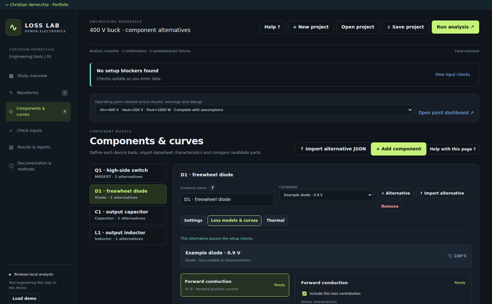
Choose the forward model and one supported recovery method for this diode.
Forward polarity and voltage-drop reference conditions must match the mapped waveform.
Review the datasheet energy definition to avoid double counting recovery in switch Eon.
Forward voltage characteristic
The mapped diode current must be positive for forward conduction. Use Vf(If) or the inverse If(Vf), with the required temperature references. Negative current does not create an additional reverse-leakage category. The tool does not model junction capacitance or avalanche automatically.
A useful datasheet fit over a finite forward-current range is Vf ≈ V0 + rf If. This is only an explanatory fit; the engine interpolates supplied samples. Near zero current, do not infer that a constant junction knee voltage is a separately dissipated power. Exactly zero current contributes zero power.
Forward diode loss
χi>0 selects forward-positive current. For a rectangular forward pulse, P = D × If × Vf. For the local V0 + rf If approximation, P = V0 × Iavg,+ + rf × Irms,+².
Forward voltage example over a finite current range
25 °C · Vf = 0.8 + 0.015 If
At 10 A the queried Vf is 0.95 V. If forward current lasts 30% of the window, forward loss is 10 × 0.95 × 0.3 = 2.85 W. The fit is illustrative and is not an imposed zero-current rule.
Recovery event detection and polarity
For a discrete diode, forward current is max(i,0) and blocking voltage is max(−v,0). For a MOSFET body diode, forward current is max(−i,0) only when the gate is OFF, and blocking voltage is max(v,0). Choose the mapped signs accordingly.
The detector arms while forward current exceeds 10⁻⁹ A. When that current ends, it looks at up to the current and next two samples for blocking voltage above 10⁻⁶ V. A recent forward sample supplies If. The event is then disarmed to avoid repeated counting; if blocking does not arrive within the short sample window, the event can be missed.
These numerical thresholds are implementation gates, not physical device parameters. Sampling, dead time, ringing and current polarity determine whether the heuristic identifies the intended commutation. Confirm the model and inspect its events before trusting recovery totals.
Method A direct recovery energy
Select Err(If), or its supported inverse, at the relevant temperature. The engine queries Err at the last forward-current magnitude before the detected event. Unlike Eon/Eoff, this recovery path does not apply an automatic blocking-voltage scaling factor: use applicable reference conditions and validate them.
Direct energy method
If Err is 30 μJ and identical recovery occurs at 100 kHz, the estimated recovery loss is 3 W. Ensure the quoted recovery energy is not already included in the switch Eon used elsewhere.
Method B recovery charge times blocking voltage
Select Qrr(di/dt), or its supported inverse, with forward-current and temperature reference conditions. The engine estimates the greatest absolute adjacent-sample current slope in a neighbourhood extending up to two samples on either side of the detected event. It queries Qrr with this slope and the event If.
di/dt is stored in A/s. A displayed 100 A/μs equals 10⁸ A/s. Use charge units correctly: 100 nC = 10⁻⁷ C. Qrr is read from the characteristic, not obtained by integrating the displayed current waveform.
Charge-based recovery approximation
This approximation ignores the detailed overlap of the recovery current and voltage waveforms. Example: 100 nC × 400 V = 40 μJ; at 100 kHz that is 4 W.
Illustrative recovery charge versus commutation slope
Fixed If and Tj
The example query at 100 A/μs returns 100 nC. The slope, If, temperature and blocked-voltage assumptions all matter; this plot is not a universal device model.
Avoid recovery double counting
A switch datasheet Eon may include the recovery of its commutating diode. Enabling a separate Err or Qrr category without checking the test definition can count the same energy twice. The confirmation checkbox records that review; it does not independently verify the datasheet.
Do not add a separate generic forward-recovery or leakage term and assume the tool includes it. Only the explicitly enabled categories with active data are summed.
Capacitor ESR loss with constant and spectral methods
Compute capacitor resistive loss from current and equivalent series resistance. Constant ESR and frequency-dependent ESR are different approximations; neither adds leakage loss from DC voltage.
Screen guide: Select constant or frequency-dependent resistance
Actual screenshot of Converter Loss Lab 2.5.5 using its built-in synthetic demonstration study. The guidance below describes associated controls; some controls may be further down the page. Example results are not laboratory measurements.
The active model determines whether current is integrated with constant R or split spectrally.
Constant resistance already includes the DC term through total RMS current.
The spectral DC resistance is not capacitor insulation resistance; verify any capacitor mean current.
Supported resistance characteristics
Model
Supported data
Query / calculation
Constant ESR
Single nonnegative resistance value
Use total time-weighted RMS current, including its mean
Frequency-oriented curve
ESR(f) or inverse f(ESR), with T references
For each retained AC bin, query frequency → ESR at device temperature
Temperature-oriented curve
ESR(T) or inverse T(ESR), with frequency references
For each retained AC bin, query temperature → ESR with bin frequency as a dependency
Imported normalised ESR
Ratios with a base resistance, canonicalised to ohms
Internal loss calculation uses absolute Ω, never the dimensionless ratio directly
Mean-current contribution in spectral mode
Separate DC equivalent series resistance
Use only for an actual nonzero mean current; this is not insulation resistance
Constant ESR method
A constant represents the equivalent series resistance chosen by the user for the whole waveform. It does not automatically vary with frequency or temperature. Choose a value appropriate to the temperature and dominant ripple spectrum or use the spectral model.
Time-weighted current and constant ESR
The tool integrates i² over time using the trapezoidal rule. Uniformly averaging samples is wrong when the imported solver time steps are unequal. The result here is per capacitor before physical device-count scaling.
Frequency-dependent method
The waveform window is linearly resampled to the selected power-of-two FFT size. For duration Tw and N spectral samples, the frequency spacing is Δf = 1/Tw, bin k is at k/Tw, and the highest represented bin is N/(2Tw). The sampled endpoint t1 is not duplicated in the FFT sequence.
The one-sided current-squared weights are |Xk|²/N² for DC and Nyquist, and 2|Xk|²/N² for other bins. Their sum represents mean-square current of the resampled periodic record. There is no invented circuit-frequency change or extra spectrum in the imported signal.
Bins below max(10⁻¹⁵ A², 10⁻⁸ of the spectral mean square) are skipped. A poor window or source sampling can spread energy into neighbouring bins and alter the resistance-weighted loss. Use integer-cycle steady-state data where possible.
DC plus harmonic resistance loss
The AC term uses per-bin resistance at the device temperature. A significant mean capacitor current requires explicit Rdc or causes a request to check mapping and steady state. If Rdc is absent, a tiny mean term below the implemented relative tolerance can be omitted.
Example ESR used for separate current harmonics
ESR at fixed temperature
Two example queries: ESR(50 kHz) = 20 mΩ and ESR(150 kHz) = 30 mΩ. The graph does not supply a 0 Hz resistance; Rdc is a separate input.
Worked comparison of constant and spectral ESR
Consider orthogonal steady-state ripple harmonics: 3 Arms at 50 kHz and 1 Arms at 150 kHz, plus a mean current of 0.2 A. At the chosen temperature, ESR is 20 mΩ and 30 mΩ for the two AC bins, and explicit Rdc is 20 mΩ.
The spectral loss is 3²×0.020 + 1²×0.030 + 0.2²×0.020 = 0.2108 W. A constant 20 mΩ model gives (3² + 1² + 0.2²)×0.020 = 0.2008 W. Neither method is universally more accurate: the result depends on how well the supplied resistance model represents the real component.
Contribution
Current
Resistance
Loss
Mean
0.2 A
20 mΩ
0.0008 W
50 kHz
3 Arms
20 mΩ
0.1800 W
150 kHz
1 Arms
30 mΩ
0.0300 W
Sum
Mean square 10.04 A²
Frequency-dependent
0.2108 W
DC voltage leakage and model boundaries
An ideal capacitor in periodic steady state has zero mean terminal current. DC terminal voltage by itself is not a DC current-loss term. A measured mean current may indicate leakage, a transient or a mapping/window error, but the tool does not diagnose that cause automatically.
The DC series resistance input is not the parallel insulation/leakage resistance. No Vdc²/Rleak term, dielectric model or automatic tanδ conversion is added. Loss mechanisms already represented by a measured equivalent ESR must not be added twice.
Inductor winding and core loss calculation in detail
Winding loss is a current/resistance calculation. Core loss is a separate voltage-to-flux calculation using a supplied volumetric loss characteristic.
Screen guide: Configure the inductor core model and reference curve
Actual screenshot of Converter Loss Lab 2.5.5 using its built-in synthetic demonstration study. The guidance below describes associated controls; some controls may be further down the page. Example results are not laboratory measurements.
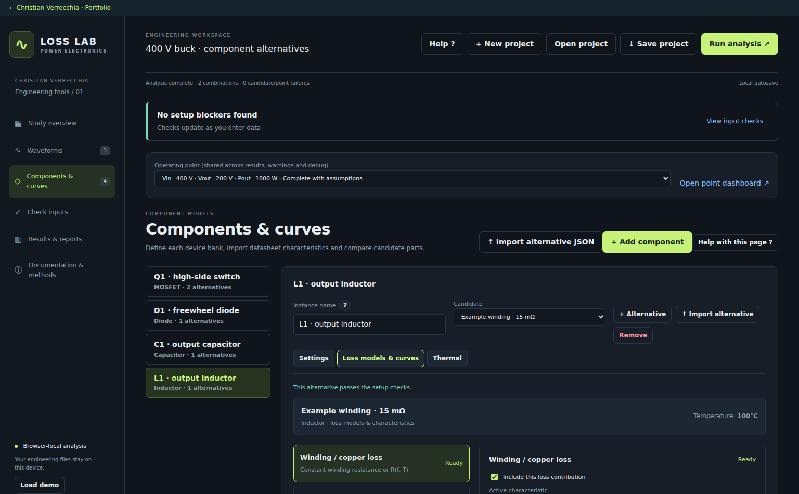
Match turns, area, volume and mapped voltage to the same magnetic device.
The tool derives flux from voltage and rejects an excessive volt-second imbalance.
Review the characteristic conditions and the sinusoidal-equivalent approximation.
Winding models and inputs
The winding resistance choices are the same constant, frequency-oriented and temperature-oriented characteristic forms as the capacitor ESR model. Here the resistance is winding resistance, not capacitor ESR. Supported inverse orientations are resolved through the selected interpolation method.
R(f,T) may represent skin/proximity effects already present in measured or calculated data. The tool does not derive an AC resistance curve from conductor dimensions, skin depth, litz construction or winding geometry.
Constant winding resistance
A constant winding resistance multiplies total time-weighted mean-square current. Do not add a separate Idc²Rdc term again when using this constant model.
Spectral winding resistance
A retained DC bin requires explicit DC winding resistance. Each retained AC bin uses its own resistance at frequency and temperature. DC and AC terms are not duplicate uses of the same RMS current.
Worked winding example
For 10 A mean current and a 2 Arms ripple harmonic at 100 kHz, choose Rdc = 20 mΩ and Rac(100 kHz) = 80 mΩ. The spectral result is 10²×0.020 + 2²×0.080 = 2.32 W. Constant 20 mΩ instead gives (10² + 2²)×0.020 = 2.08 W.
The 0.24 W difference arises from the resistance model, not from a change in the current waveform. Multiple ripple harmonics add their own I²R terms.
Illustrative winding resistance versus frequency
Rac at fixed temperature
The DC value is entered separately as 20 mΩ. The illustrative 100 kHz point is 80 mΩ. Low-frequency curve points do not automatically replace the required spectral DC resistance.
Voltage integration to flux density
The mapped inductor voltage is divided by the series-device count before this calculation. N is turns per device, Ae effective core cross-sectional area in m², and Vcore the magnetic material volume in m³. Use the voltage actually across the winding represented by those turns and core.
The time-average winding voltage is checked. If |mean(V)| exceeds max(10⁻⁹ V, 1% of Vrms), the core estimate is rejected as not volt-second balanced. Within that tolerance the numerical mean is removed before trapezoidal integration to avoid artificial drift.
Flux density from winding volt-seconds
B0 sets an integration offset. This loss estimate uses the peak-to-peak swing, so changing B0 does not introduce a DC-bias correction.
Equivalent peak and volumetric core loss
The equivalent peak is half the flux swing, not max|B| including DC offset. The returned loss density must be in W/m³ before multiplying by volume.
Core characteristic methods
Characteristic
Engine query
Reference dependencies
pv(B), or inverse B(pv)
Bpk → pv
Frequency and temperature where supplied
pv(f), or inverse f(pv)
Excitation frequency → pv
Bpk and temperature where supplied
Frequency choice
Positive user-selected frequency, otherwise dominant non-DC winding-voltage FFT bin
Automatic detection uses 1024 resampled points
Worked square-voltage core example
An ideal ±20 V winding voltage at 100 kHz, N = 10, and Ae = 100 mm² = 10⁻⁴ m² gives ΔB = V/(2fNAe) = 0.10 T and Bpk = 0.05 T. Set 100 kHz explicitly for this example.
If the appropriate characteristic gives pv(0.05 T,100 kHz,T) = 30 kW/m³ and Vcore = 10 cm³ = 10⁻⁵ m³, core loss is 0.30 W. Combined with the spectral winding example, the per-inductor total is 2.32 + 0.30 = 2.62 W. These are illustrative input conditions, not measured component data.
Balanced square winding voltage
Applied winding voltage
One ideal 10 μs cycle. Positive and negative volt-seconds cancel. The 5 μs half cycle produces a 0.10 T flux change for the stated N and Ae.
Integrated flux swing for the same voltage
B with illustrative centring offset
The half-swing is 0.05 T. The offset is for display only; this core model does not correct loss for DC bias.
Core limitations and exclusions
The tool queries supplied sinusoidal-equivalent pv data. It does not fit Steinmetz coefficients, implement an improved generalised Steinmetz equation, model minor loops, resolve nonsinusoidal hysteresis or compute bias-dependent permeability. Frequency, temperature and flux coverage must be reviewed.
The approximation confirmation records that limitation. Winding and core losses can be enabled separately. A dedicated transformer loss model, interwinding dielectric loss, gap-fringing copper model and magnetic saturation/rating check are not automatically added.
Numerical methods interpolation and thermal equations
Understand how the same waveform and characteristic points become averages, inverse queries and iterative temperatures.
Screen guide: Set thermal scope and inspect convergence
Actual screenshot of Converter Loss Lab 2.5.5 using its built-in synthetic demonstration study. The guidance below describes associated controls; some controls may be further down the page. Example results are not laboratory measurements.
The thermal reference and Rth form the model’s steady-state temperature target.
Declare whether Rth represents one device or the entire bank; the loss multiplier changes.
Use the convergence plot to explain a limit breach or failure instead of treating failure as zero loss.
Time averages and physical device scaling
The analysis window is Tw = t1 − t0. Boundary values are interpolated when the selected duration cuts through the source record. Piecewise numerical integration uses actual time steps, so a dense cluster of solver samples does not receive extra weight just because it has more rows.
Trapezoidal average
Apply this to instantaneous power, to i² for RMS, and to mapped v×i for delivered power. A sharp edge is only as accurate as the supplied samples.
Per-device conditions and bank total
The same per-device loss is replicated Ntot times under ideal sharing. For constant resistance with Ntot = NsNp, this gives Pbank = (Ns/Np) × Ibank,rms²R.
Linear interpolation and why inverse order matters
For a direct query in the stored X→Y direction, the supported forward-first path uses the base family interpolation. The order distinction becomes important for an inverse query: reference-first inverts each reference curve and then blends returned X values; forward-first first blends the forward Y(X) family at requested dependencies and then inverts it.
The example below uses actual piecewise-linear sample points. At 25 °C, I(V) has points (0,0), (0.5,2.5), (1,10). At 125 °C it has (0,0), (0.5,5), (1,20). Query I = 10 A at 75 °C. The shapes are synthetic to illustrate the order; they are not a claimed MOSFET temperature trend.
Linear segment query
The same line is extended outside the segment only when the selected policy permits extrapolation.
Two-reference dependency blend
Here λ = 0.5. At V = 0.5, the forward family has I = 3.75 A; at V = 1, I = 15 A. Inverting that segment at 10 A gives V = 7/9 = 0.77778 V.
Method
At I = 10 A, T = 75 °C
Reason
Reference-curve interpolation
0.83333 V
Average of inverse queries 1.00000 V and 0.66667 V
Forward family first, then invert
0.77778 V
Inverse of the already blended piecewise-linear family
Weighted inverse-distance average
Separate heuristic, depending on normalised dependency distances
Not a replacement for the forward-family construction
Forward curves and their dependency-interpolated family
Reference at 25 °CReference at 125 °CCombined forward family at 75 °C (dashed)
At 10 A the interpolated forward family returns 0.77778 V. Inverting the two references separately and averaging returns 0.83333 V. This difference is mathematical order, not automatically an error.
Thermal fixed point and damping
For iterative mode, Rth can apply to each physical device or to the entire bank. Pscope is therefore either the per-device total or the bank total at the current trial temperature. Re-evaluation can change all temperature-dependent characteristics.
Thermal target and damped next trial
The engine stops when |Ttarget − Tn| < 0.05 °C, with at most 80 iterations, and rejects nonfinite targets or targets above the configured limit. It returns losses at the last trial temperature; finite convergence tolerance leaves a small residual.
Illustrative steady-state case
Value
Reference temperature
25 °C
Loss law used for this example
P(T) = 2 × [1 + 0.004(T − 25)] W
Per-device thermal resistance
5 K/W
Analytical fixed point
T − 25 = 10 + 0.04(T − 25), so T = 35.4167 °C
Confidence and dimensional checks
SI units make common scaling errors visible: A×V = W; A²×Ω = W; joules divided by seconds = W; coulombs × volts = joules; W/m³ × m³ = W. Use the input unit selectors and inspect canonical values after import.
A complete numerical result does not prove circuit suitability. Review exclusions, curve coverage, accepted zero floors, current/voltage signs, gate event timing and thermal scope. Imported waveforms stay fixed in alternative comparison and sensitivity; changed devices do not alter the circuit solution.